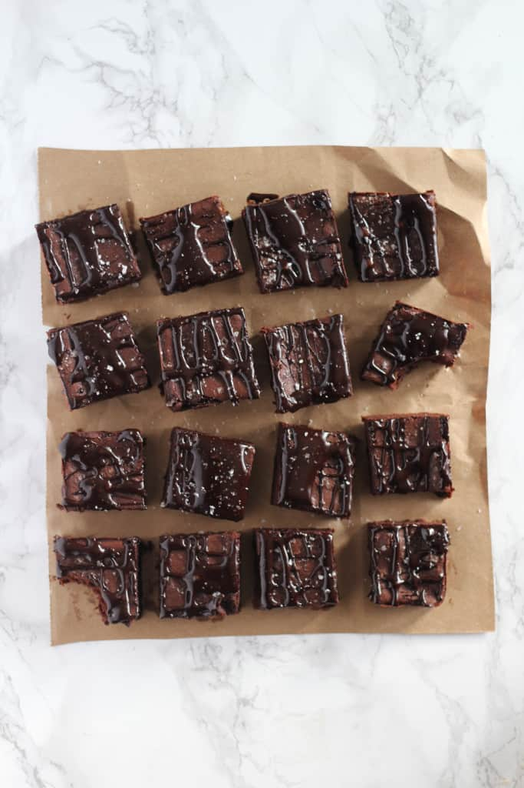
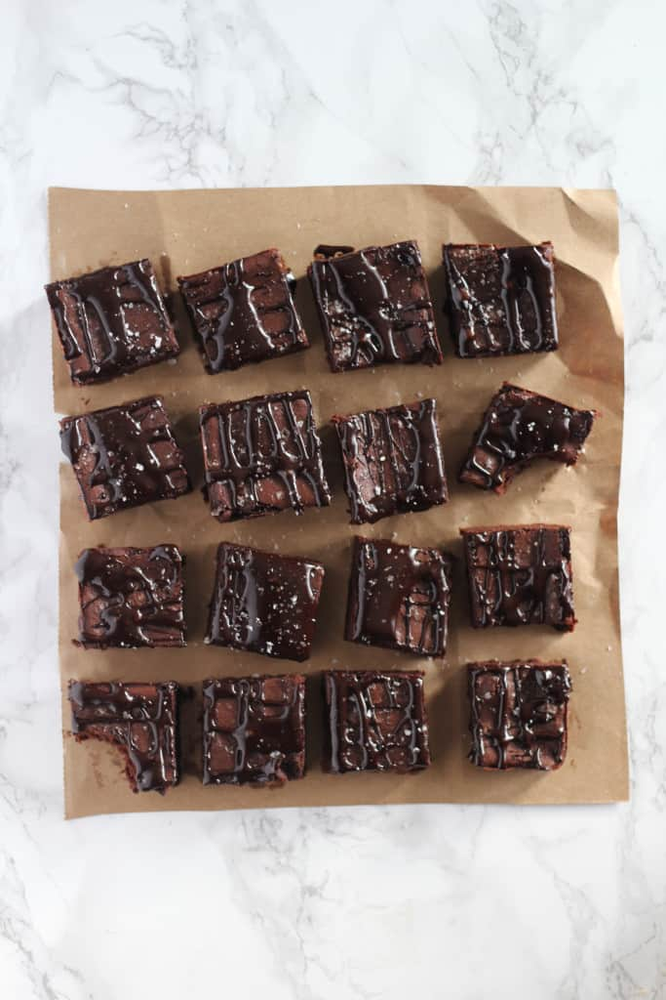

Recipes
Fudgy Date Brownies
- Origin: American
- Source: The Baker Chick
- Category: Dessert
This is a recipe that swaps processed sugar for dates! Great for anyone trying to cut processed sugar.
Recipe Ingredients
- 1 1/2 cups pitted dates
- 1 cup hot water
- 3/4 cup unsalted butter softened (1 1/2 sticks)
- 2 cold eggs
- 1 teaspoon vanilla extract
- 3/4 cup cocoa powder
- 1/2 cup plus 2 tablespoons all purpose flour
- Sea salt for sprinkling
Recipe Steps
- Grease or line an 8x8 baking pan. Preheat oven to 350F.
- In a food processor or blender, puree the dates and hot water until smooth. Measure out a cup of the paste (mine yielded exactly a cup,) and transfer to a large bowl with the butter.
- Cream the butter and date paste until smooth.
- Add the eggs, one at a time and vanilla extract, mixing until fluffy and smooth.
- Add the cocoa and flour, and mix on low until well combined.
- Spread batter into prepared pan, smoothing with the back of a spoon. Sprinkle a little sea salt on top.
- Bake for 18-23 minutes, or until edges are set. Allow pan to cool while you prepare the glaze.
- Whisk together the butter, honey and cocoa powder. Add vanilla and whisk until smooth. If the glaze seems a little runny- add a dash more of cocoa powder. If it seems too thick- you can add a splash of milk. Drizzle over the brownies and sprinkle with more sea salt.
- Brownies will last for up to a week in a sealed container in the fridge.
Photo Gallery


 
